Quercegrossa (Ricordi e memorie)
CAPITOLO XI - COSE D'ALTRI TEMPI
Torna all'Indice Cose d'altri tempi
Vai all'Indice dei Capitoli
Cresime e Comunioni
(Cresime 1)
(Cresime 2)
(Comunioni 1)
(Comunioni 2)
Cresime 2
Buti Ginetta a Cresima il 16 giugno 1929 in cattedrale a Siena: comare Buti Giuseppina. Cresima officiata dall'abate generale di Monte Oliveto Maggiore don Luigi Perego.
29 maggio 1927: Cresime a Siena.
Losi Alda (a destra) e la sorella Duilia.
Madrina per entrambe la zia Gina Vienni
Guido Buti dell’Arginano a Cresima a Siena il 16 giugno1918. Compare Angelo Oretti. E’ questa la più antica immagine di una Cresima a Quercegrossa.
Oretti Lea a Cresima il 23 giugno 1935. Nel registro della Curia non è riportato il nome della madrina. Nella fascia di Lea la M (Maria); foto precedente: la + per i maschi.
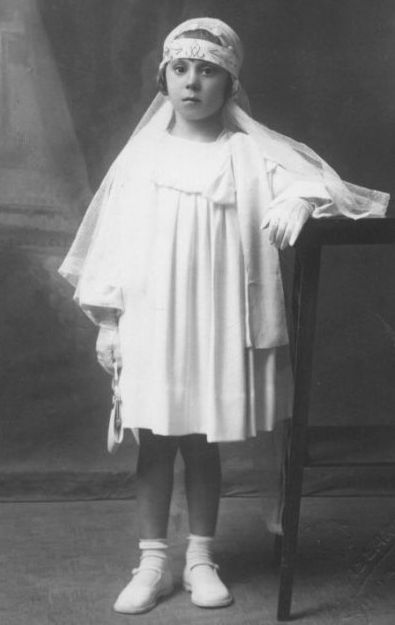
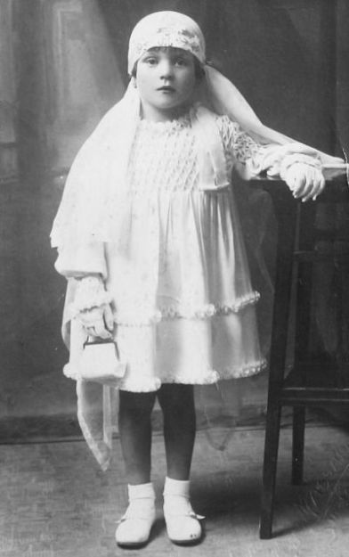
Lara Brogi (sopra a sinistra) a Cresima il 23 giugno 1935, comare la zia Settimia, e Anna Bernardeschi passata a Cresima quindici giorni dopo , il 7 luglio, sempre a Siena avendo come comare Parisina Masti. Entrambe le bambine indossano un sobrio vestitino non troppo vistoso, come invece appariranno in seguito col dilagare dell’organza alle comunioni.
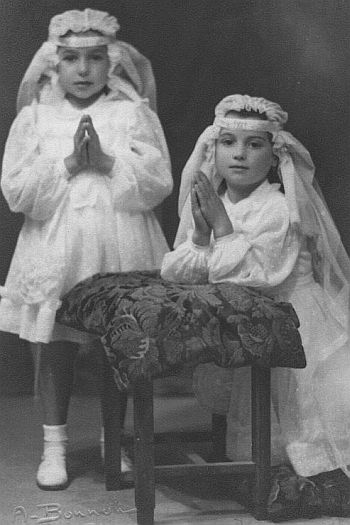
A fianco, foto delle cugine Bianca e Annunziata Mori, cresimate a Siena il 9 giugno 1946.
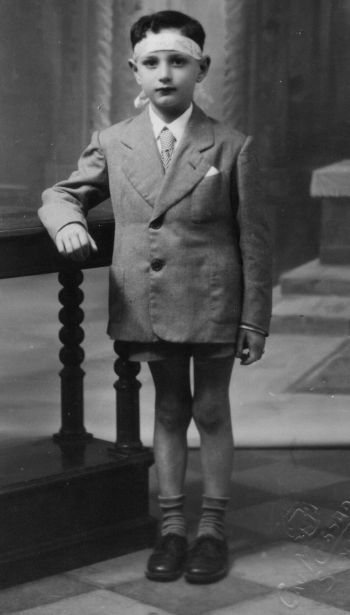
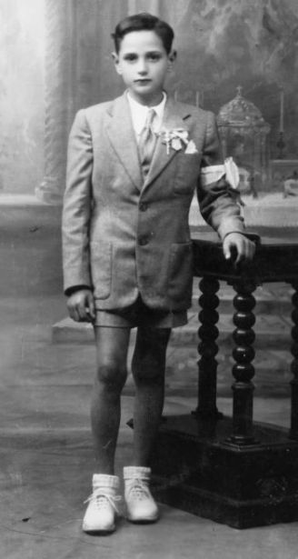
Pierugo Buti a Cresima il 31 maggio 1942 all’età di 7 anni, e a Comunione il 20 maggio 1945 in età di 10 anni. Stesso fotografo Massarelli e stesso inginocchiatoio.
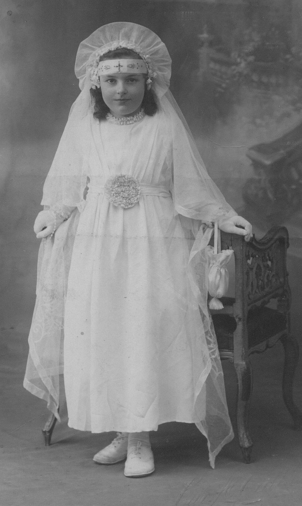
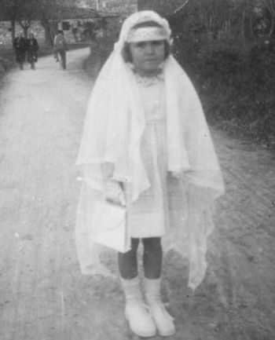
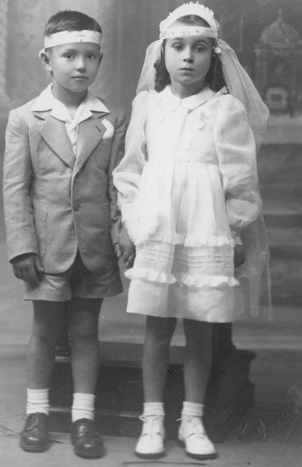
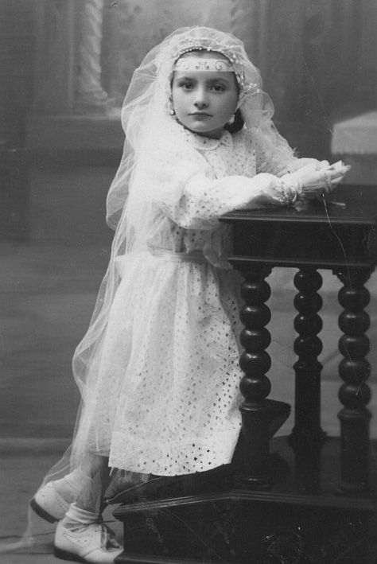
<
Foto in alto: Anna Callaioli (1940?).
A destra, sulla strada dell'Olmicino Lorena Palazzi (19.3.1943).
In basso: Mori Raffaello e Luisa (16.5.1948)
Foto di destra: Giorgina Rossi a Cresima il 12.6.1949.
Lorenza (a destra) e Raffaella con la ben visibile e civettuola fascia da Cresima (31 maggio 1953).
Elina Volpini (Siena, 20 giugno 1954).
Mirella Guarducci (Siena, 8 giugno 1952).
Fiorella Guarducci a Cresima il 6 giugno 1954. Foto seguenti: fronte e retro del santino da Cresima di Fiorella.
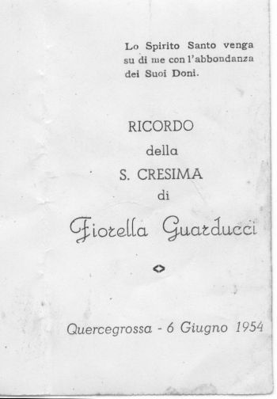
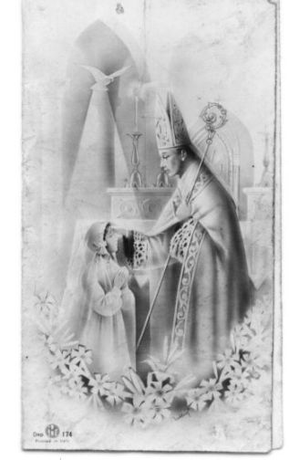
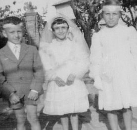
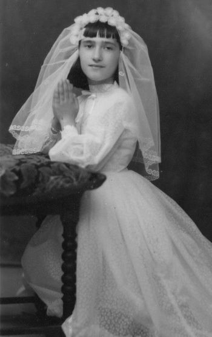
A destra: Marcella Finetti a Cresima (Siena, 1958).
Sopra: Sergio Bianciardi, Elina Volpini
e Gina Fabiani il 20 giugno 1954.
Cresima e Comuniome a Quercegrossa il 23.9.1962 con l’arcivescovo Castellano.
Da destra: Masiero Giancarlo, Sauro Cappelletti, Pagliantini Paola, Mori Laura, Socci Stefano, Barucci Donaltella, Morini Rosanna, Simonetta Stazzoni ed Emanuela Riversi.
|